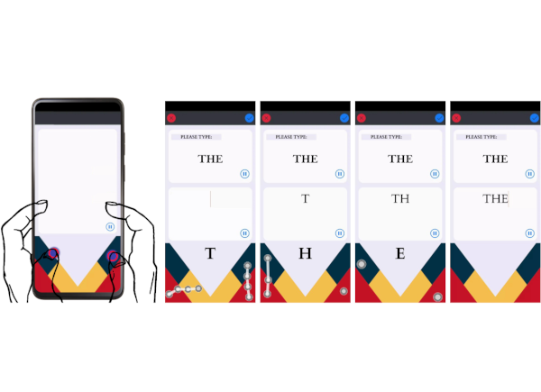
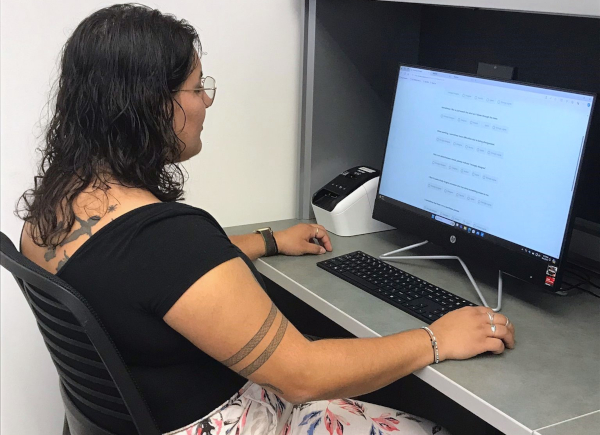
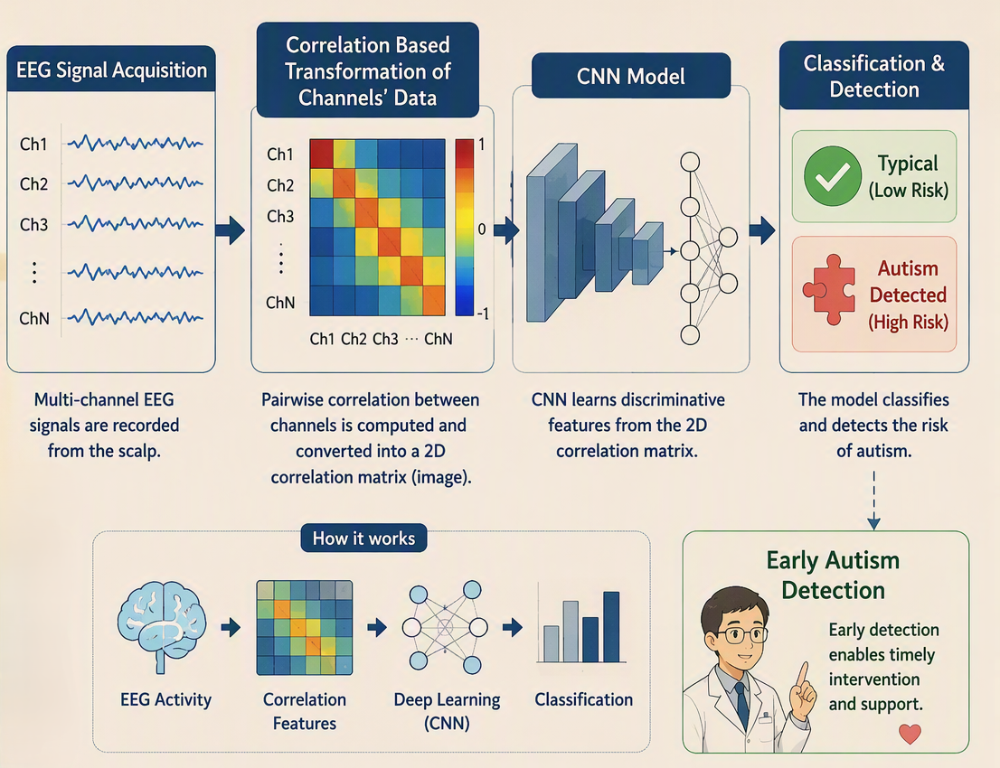
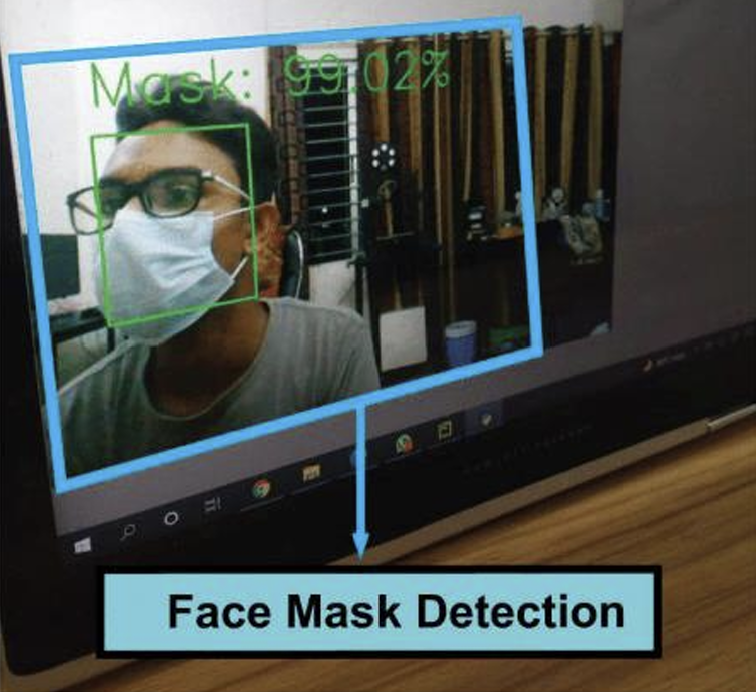
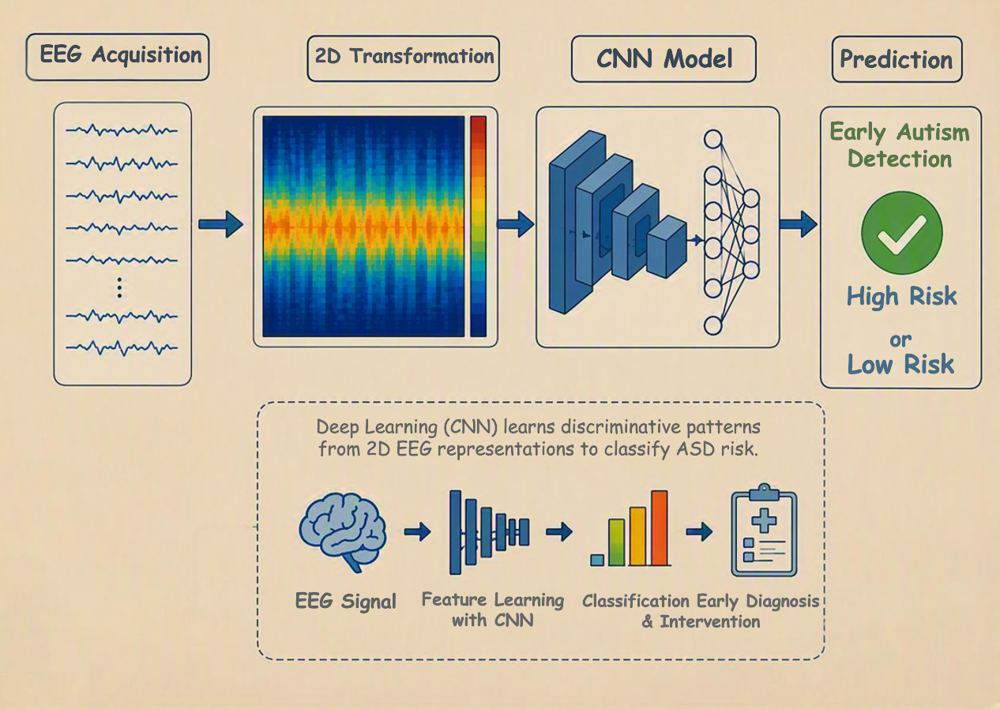
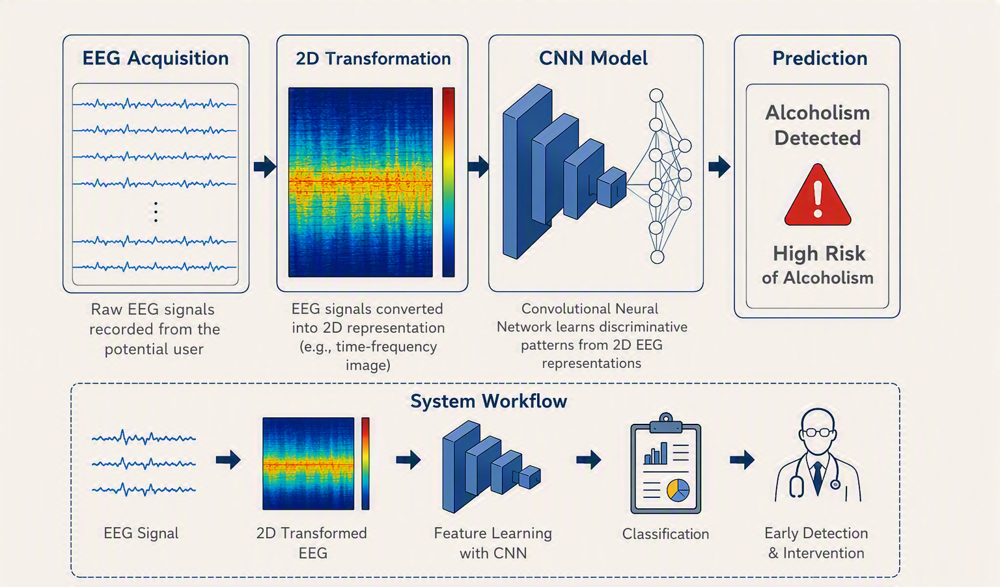

MobileHCI 2026
I am a PhD candidate in Electrical Engineering and Computer Science at the University of California, Merced, where I conduct research in the Inclusive Interaction Lab advised by Dr. Ahmed Arif. I completed my BSc in Computer Science and Engineering from Khulna University of Engineering & Technology, Bangladesh.
My research is at the intersection of human-computer interaction (HCI) and applied artificial intelligence (AI), and focuses on designing and developing inclusive input and interaction techniques for digital systems. My current work spans gesture-based techniques, eye-tracking, AI-driven methods, and brain-computer interfaces (BCIs), particularly for individuals with motor and vision impairments. Beyond these, I actively look to other domains for inspiration and translate what I find into new tools in pursuit of more inclusive interaction.
One of my earlier research projects on the development of an EEG‑based depression screening system, received national recognition with the BASIS National ICT Winner Award. Alongside this, my work has been published and accepted at premier Human-Computer Interaction venues including ACM CHI and MobileHCI, as well as in Scopus-indexed peer‑reviewed journals.

MobileHCI 2026





IJCACI Springer 2021
No publications match the selected filters. Try selecting "All" on one of the filter rows above.